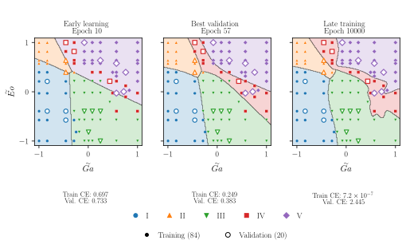
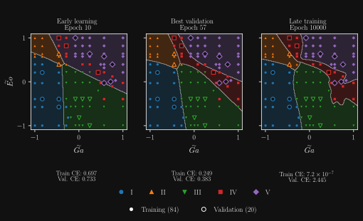

from collections import Counter
from pathlib import Path
import numpy as np
from classification_exercise_tools import (
REGIMES, arrays, fit_classifier, fit_scaler, load_points,
log_probabilities, metrics, save_model, split_lecture, transform,
)
DATA = Path("points.csv")
if not DATA.is_file():
DATA = Path("../datasets/path_shape_regimes/tripathi2015_digitization/points.csv")
rows = load_points(DATA, lecture=True)
raw, labels = arrays(rows)
print(Counter(row["regime"] for row in rows))
print("First observation:", raw[0], REGIMES[labels[0]])Bubble regime classification
Worked example for Lecture 4
This work is licensed under a Creative Commons Attribution 4.0 International License.
What this reading is for
We reproduce the five-class example from the classification lecture, from digitized regime observations to class probabilities for new Galilei and Eötvös numbers. The exercise extends this baseline by comparing numerical and experimental data.
Data and setup
The cells run in order with NumPy. From the repository, we run them from the notebooks folder. For a standalone copy, we save the three downloads in the same folder.
Download notebook source Download classifier helper Download observations
The inputs are positive, radius-based Galilei and Eötvös numbers. The labels I–V are the regimes assigned to digitized markers in Figure 1 of Tripathi et al.. Each row represents one recovered marker.
Split and scale
We reserve approximately 20% of each class for validation. We fit the logarithmic min–max transformation on training inputs alone. The same transformation applies to validation cases and future queries. Validation features may fall outside the training range.
train, validation = split_lecture(rows, seed=42)
scaler = fit_scaler(raw[train])
x_train = transform(raw[train], scaler)
x_validation = transform(raw[validation], scaler)
print(f"{len(train)} training cases, {len(validation)} validation cases")Train and select a checkpoint
The network has two tanh layers of 32 units and five output logits. Full-batch Adam minimizes categorical cross entropy. We keep training for 10,000 updates to illustrate the difference between the minimum-validation-loss checkpoint and the final state.
fit = fit_classifier(
x_train, labels[train], x_validation, labels[validation],
hidden_sizes=(32, 32), seed=42, learning_rate=0.01,
epochs=10_000, patience=None,
)
final_fit = {"parameters": fit["last_parameters"]}
for name, state in [("Selected", fit), ("Final", final_fit)]:
result = metrics(state, x_validation, labels[validation])
print(f"{name}: loss {result['cross_entropy']:.4f}, "
f"errors {result['errors']}/{result['samples']}")
print("Selected epoch:", fit["best_epoch"])
print("Confusion matrix (rows observed, columns predicted):")
print(metrics(fit, x_validation, labels[validation])["confusion"])The lecture figure shows how the decision regions change over this training trajectory. The validation set selects the checkpoint, so its score measures performance on the cases used for selection. An independent assessment would require additional observations.


Predict a regime and save the model
We transform a query with the training scaler, compute probabilities in the fixed regime order, and take the class with the largest probability. The example query uses the feature values of one validation observation. The saved archive contains the selected weights, scaling bounds, and regime order.
query = raw[validation[:1]]
probabilities = np.exp(log_probabilities(transform(query, scaler), fit["parameters"]))
print("Ga, Eo:", query[0])
print("Probabilities:", dict(zip(REGIMES, probabilities[0].round(4))))
print("Predicted regime:", REGIMES[probabilities[0].argmax()])
save_model(Path("output/bubble-classification/model.npz"), fit, scaler)